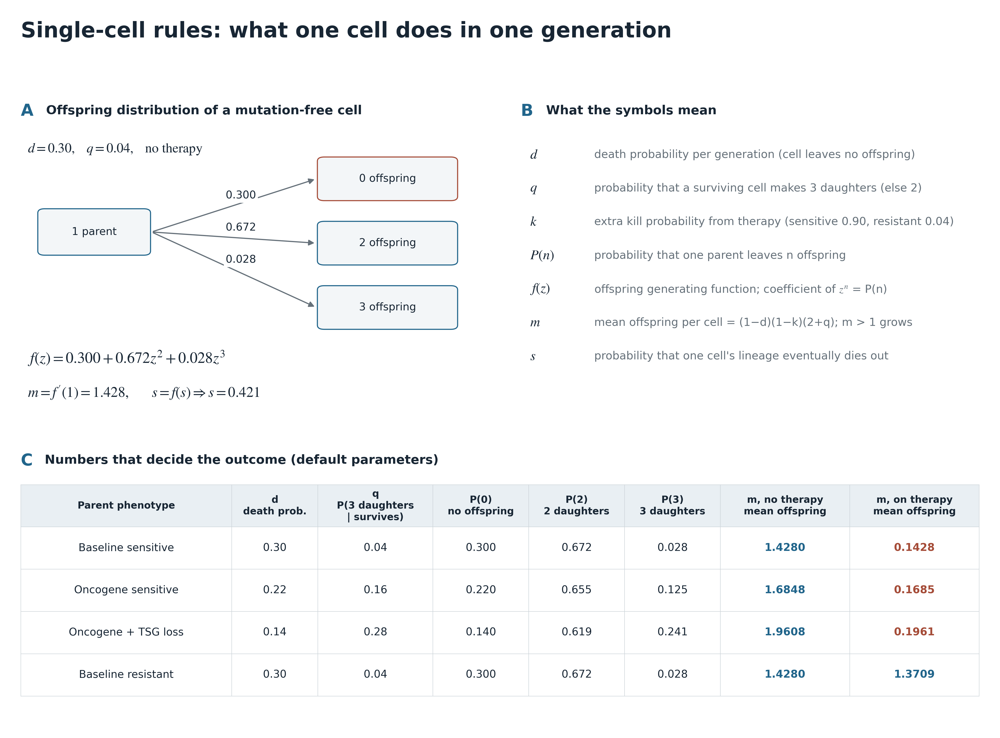
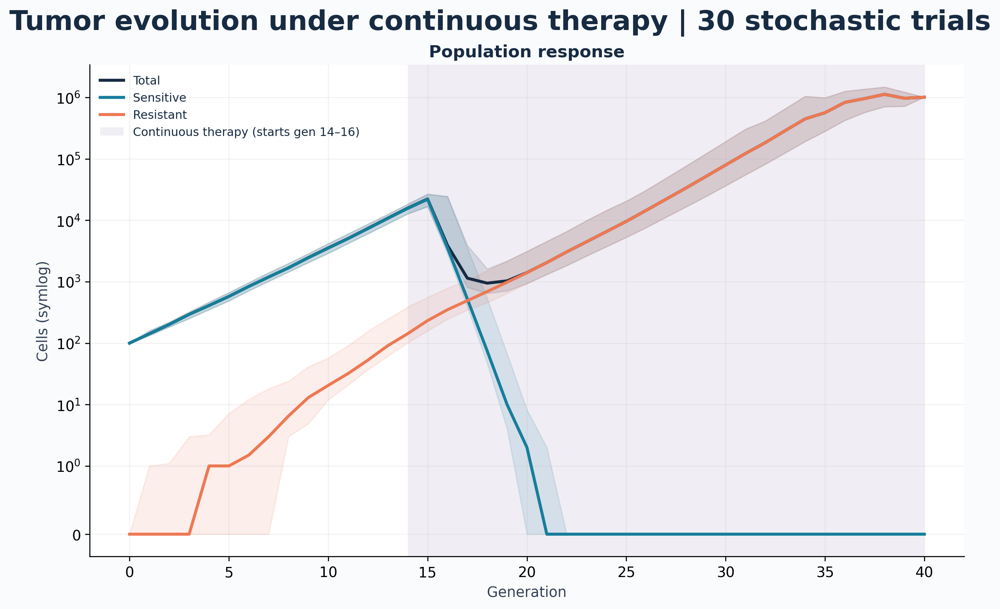
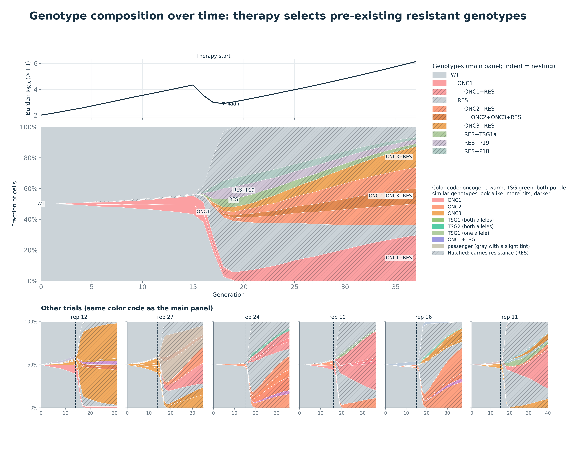
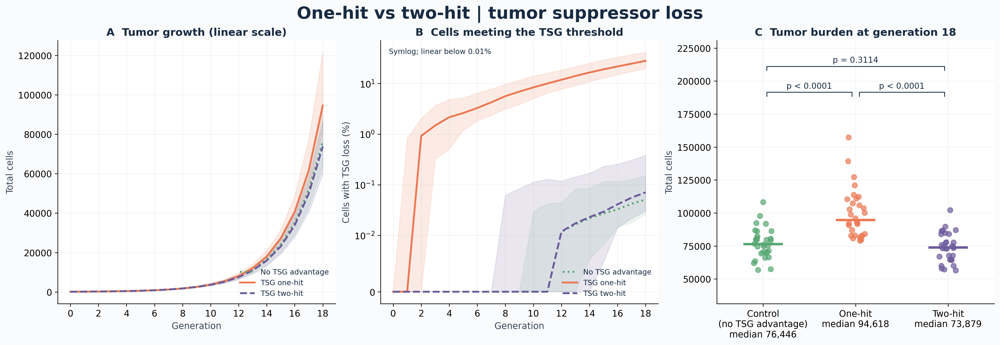
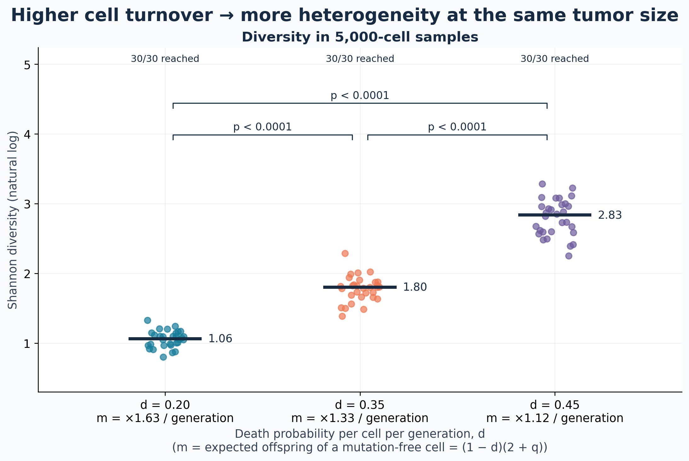
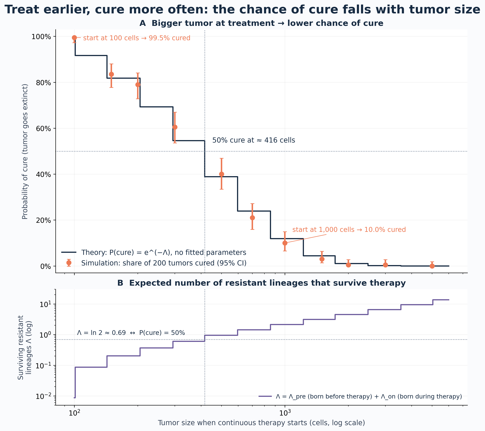

The program does two things: it uses one single-cell rule to simulate tumors stochastically (simulation.py), and it uses the same rule to derive theory that checks and interprets the simulation results (analysis.py). The other files only repeat runs, save data and draw figures.
{genotype: cell count}. Cells with the same genotype share the same fate probabilities, so they can be sampled as one group; mutation only moves cells from one entry to another, and the total stays the same.Concept
Each cell independently leaves 0, 2 or 3 daughters per generation, with probabilities set only by (d, q, k) ⇒ a discrete-time stochastic branching process; the offspring distribution is fully described by f(z) (mutation is ignored here).
d: probability of dying in a generation (leaves 0 daughters)
q: probability that a surviving cell makes 3 daughters (otherwise 2)
k: extra kill probability from therapy (sensitive 0.90, resistant 0.04)
Key math

151def growth_probabilities(genotype: int, config: Config) -> tuple[float, float]:152 """Oncogene and TSG-loss advantages; they add."""153 oncogene = driver_count(genotype, config) >= config.driver_hits154 suppressor = suppressor_loss(genotype, config)155 # Each class counts once; TSGs do not stack.156 death = max(157 0,158 config.death_rate159 - config.driver_death_reduction * oncogene160 - config.suppressor_death_reduction * suppressor,161 )162 # Optional resistance cost (default 0).163 if config.resistance_cost and genotype & (1 << config.resistance_gene):164 death = min(1.0, death + config.resistance_cost)165 triple = (166 config.triple_probability167 + config.driver_triple_bonus * oncogene168 + config.suppressor_triple_bonus * suppressor169 )170 return death, triple
Key points
253def simulate(254 config: Config = Config(),255 seed: int = 42,256 therapy: bool = True,257 target_size: int | None = None,258) -> Result:259 """Synchronous-generation branching process; therapy stays on once started."""263 # Validate settings; create the RNG.264 config.validate()265 if target_size is not None and target_size <= 0:266 raise ValueError("target_size must be positive")267 # Fixed seed; genotype 0 = no mutations.268 rng = np.random.default_rng(seed)269 population = {0: config.initial_cells}270 # Per-generation summaries and genotype snapshots.271 history, populations = [], []272 therapy_generation = None273 therapy_on = False274 active = []275 stop_reason = "generation_limit"276 # Record the current generation, then advance.277 for generation in range(config.generations + 1):278 row = summarize(population, generation, config)279 history.append(row)280 populations.append(dict(population))281 # Stop on extinction, target size, cell cap or time limit.282 if row["total"] == 0:283 stop_reason = "extinction"284 break285 if target_size is not None and row["total"] >= target_size:286 stop_reason = "target_reached"287 break288 if row["total"] >= config.max_cells:289 stop_reason = "cell_limit"290 break291 if generation == config.generations:292 break293 # Therapy starts at the first threshold crossing and stays on.294 if (295 therapy296 and therapy_generation is None297 and row["total"] >= config.therapy_start_size298 ):299 therapy_generation = generation300 therapy_on = True301 # adaptive: pause when burden falls, resume at threshold.302 elif therapy_generation is not None and config.therapy_mode == "adaptive":303 reference = history[therapy_generation]["total"]304 if (305 therapy_on306 and row["total"] <= config.adaptive_pause_fraction * reference307 ):308 therapy_on = False309 elif not therapy_on and row["total"] >= config.therapy_start_size:310 therapy_on = True311 active.append(therapy_on)312 crowding = crowding_death(row["total"], config)313 # Update each genotype as one batch.314 offspring = {}315 for genotype, count in population.items():316 # Genotype effects, then therapy kill.317 death, triple = growth_probabilities(genotype, config)318 if crowding:319 death = min(1.0, death + crowding)320 # Therapy acts on natural survivors.321 if therapy_on:322 if genotype & (1 << config.resistance_gene):323 kill = config.resistant_therapy_kill324 else:325 kill = config.sensitive_therapy_kill326 death = 1 - (1 - death) * (1 - kill)327 # Survivors, then triple divisions; the rest make two.328 survivors = int(rng.binomial(count, 1 - death))329 triples = int(rng.binomial(survivors, triple))330 # 2 daughters per survivor, +1 per triple.331 n = 2 * survivors + triples332 if n:333 offspring[genotype] = n334 # Mutate after division; effect starts next generation.335 population = mutate_offspring(offspring, config, rng)336 # Return history and stop reason.337 return Result(338 config, seed, history, populations, therapy_generation, stop_reason, active339 )
Key points
184def mutate_offspring(185 population: dict[int, int], config: Config, rng: np.random.Generator186) -> dict[int, int]:187 """Binomial mutation per gene, equivalent to per-cell sampling."""188 # Copy so the caller's dict is untouched.189 population = dict(population)190 # All genes plus the second TSG alleles.191 for gene in range(config.n_genes + len(config.suppressor_genes)):192 bit = 1 << gene193 # Read old, write new: no double counting.194 updated = dict(population)195 for genotype, count in population.items():196 # Mutated genes stay mutated; sample only cells not yet mutated.197 if genotype & bit:198 continue199 # One binomial draw per genotype.200 mutants = int(rng.binomial(count, config.mutation_rate))201 if mutants:202 # Move mutants to genotype | bit.203 updated[genotype] -= mutants204 updated[genotype | bit] = updated.get(genotype | bit, 0) + mutants205 # Drop empty genotypes; total unchanged.206 population = {g: n for g, n in updated.items() if n > 0}207 return population
Key points


Key points

Key points
134def suppressor_alleles(genotype: int, gene: int, config: Config) -> int:135 """Inactivated alleles of one TSG (0, 1 or 2)."""136 # Second allele bit sits after n_genes.137 second = config.n_genes + config.suppressor_genes.index(gene)138 return int(bool(genotype & (1 << gene))) + int(bool(genotype & (1 << second)))139140141# Any TSG at its hit threshold?142def suppressor_loss(genotype: int, config: Config) -> bool:143 # Both hits must be in the same gene.144 return any(145 suppressor_alleles(genotype, gene, config) >= config.suppressor_hits146 for gene in config.suppressor_genes147 )
Key points

Question: how large can a tumor grow before treatment starts and still be cured completely?
In one sentence
The later therapy starts and the larger the tumor, the more likely it already hides resistant cells; if a single resistant lineage survives, the tumor grows back. So the chance of cure drops steeply with tumor size.
| Therapy start (cells) | Simulated cure | Theoretical cure | Surviving resistant lineages Λ |
|---|---|---|---|
| 100 | 99.5% | 99.1% | 0.009 |
| 300 | 60.5% | 54.6% | 0.61 |
| 500 | 40.0% | 38.8% | 0.95 |
| 1,000 | 10.0% | 11.9% | 2.1 |
| 2,000 | 0.5% | 1.1% | 4.5 |
| 5,000 | 0% | ≈ 0% | 9.5 |
Core idea: cure ⇔ no resistant lineage survives therapy. So compute the expected number of resistant lineages that survive (Λ); the cure probability is the chance that there are none.
Number of lineages: what decides extinction
What decides cure is the number of resistant lineages that survive therapy, Λ, not the number of resistant cells: if one lineage survives, the tumor grows back. This follows from three model assumptions:
Why the theory curve is a staircase
The tumor does not grow continuously; it jumps ×1.43 per generation. For example, thresholds of 150 and 200 are both first reached in generation 2 (about 204 cells), so therapy actually starts at the same moment and the cure probability is the same; hence the staircase.
Variables in the formulas
T: generations of growth before therapy (from 100 cells to the threshold size)
i: generation in which a resistant mutation arises (i = 1, …, T; written s in the code)
Si: sensitive cells in generation i; ST: sensitive cells when therapy starts
m: mean offspring per cell without therapy
μ: probability that a daughter cell acquires the resistance mutation
f(z): offspring generating function without therapy; f(n): f applied n times in a row (a lineage after n generations)
fon: offspring generating function of resistant cells on therapy
qon: probability that one resistant lineage eventually dies out on therapy (fixed point of fon)
mS,on: mean offspring of sensitive cells on therapy (< 1, shrinking each generation)
Λpre, Λon: expected numbers of resistant lineages that arise before / during therapy and survive; Λ = Λpre + Λon
L: number of resistant lineages that actually survive (a random variable); ℓ: a possible value of L, 0, 1, 2, …
Key math
Key functions
304def goldie_coldman_theory(config: Config, threshold: float) -> dict:305 """Poisson cure probability: P(cure) ≈ exp(−Λ), baseline cells only."""313 d, q, mu = config.death_rate, config.triple_probability, config.mutation_rate314 off = offspring_law(d, q)315 on_r = offspring_law(1 - (1 - d) * (1 - config.resistant_therapy_kill), q)316 m = (1 - d) * (2 + q)317 m_s_on = m * (1 - config.sensitive_therapy_kill)318 q_on = extinction(on_r)319 T = int(320 np.ceil(321 np.log(max(threshold, config.initial_cells) / config.initial_cells)322 / np.log(m)323 - 1e-12324 )325 )326 S = config.initial_cells * m ** np.arange(T + 1)327 lam_pre, mean_r0, survive = 0.0, 0.0, q_on328 # Go backwards: a clone born at s grows T−s generations.329 for s in range(T, 0, -1):330 births = mu * m * S[s - 1]331 lam_pre += births * (1 - survive)332 mean_r0 += births * m ** (T - s)333 survive = pgf(off, survive)334 lam_on = mu * S[T] * m_s_on / (1 - m_s_on) * (1 - q_on)335 return {336 "threshold": threshold,337 "T": T,338 "N_T": float(S[T]),339 "lambda_pre": lam_pre,340 "lambda_on": lam_on,341 "p_cure": float(np.exp(-(lam_pre + lam_on))),342 "mean_R0": mean_r0,343 "q_on": q_on,344 }

208def lineage_extinction(death, triple):209 """Lineage extinction: smallest fixed point of f(s)."""210 s = 0.0211 for _ in range(100_000):212 s_next = death + (1 - death) * ((1 - triple) * s**2 + triple * s**3)213 if abs(s_next - s) < 1e-15:214 break215 s = s_next216 return s_next
Key points
Key points